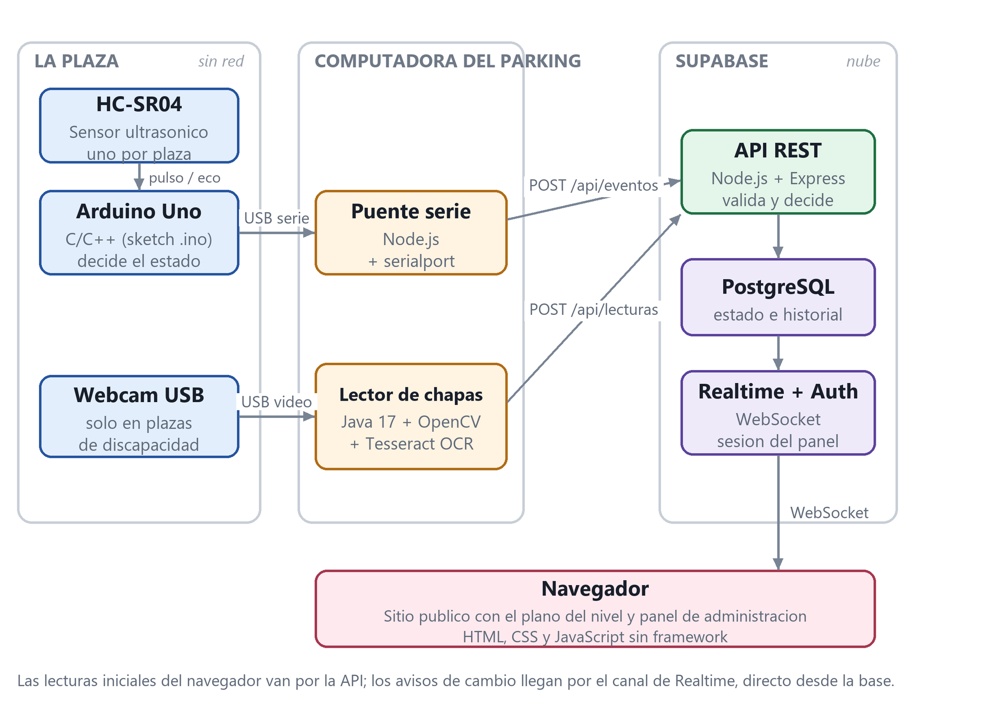

ParkEx — plazas en tiempo real
- Contexto
- Concurso ConectaLab – Litoral Norte (UTU) · resumen para la Semana Académica UTEC
- Equipo
- 5 estudiantes del ITSP, con dos docentes tutores
- Rol
- Cofundador · desarrollo de la plataforma
- Repositorio
- github.com/facuduarte-dev/ConnectaLab
- Stack
- Arduino Uno + HC-SR04 · Node.js + Express · PostgreSQL en Supabase · Realtime · Java + Tesseract OCR · HTML, CSS y JS sin framework
- Descripción
- En los estacionamientos privados la gente recorre niveles enteros buscando lugar, y las plazas para personas con discapacidad se ocupan sin permiso. ParkEx muestra sobre el plano de cada nivel qué plazas están libres u ocupadas, y en las reservadas lee la matrícula por OCR y comprueba si termina en DI, el distintivo uruguayo de discapacidad.
Nivel 1 · plano en vivo
7 libres de 12
01
02
03
04
05
06
CIRCULACIÓN →
07
08
09
10
11
12AUT
POST /api/eventos · plaza 12 → ocupado
POST /api/lecturas · plaza 12 → autorizado
libreocupadoreservada (D)último cambio

↑ Simulación del plano: en el sistema real, cada cambio llega por Realtime y se repinta solo la plaza afectada
- Timeline
- 04/08/2026 → 29/08/2026 · circuito validado de punta a punta el 25/08/2026 sobre una plaza real
- Proceso
- Ocho fases incrementales, cinco sin depender del hardware. Cada plaza emite su estado por puerto serie; un puente en Node.js lo convierte en
POST /api/eventos.
- Resultado
- Tres resultados de lectura (autorizado, no autorizado y no verificable) con un umbral de confianza de 0,80. Si la lectura falla, nunca se registra una infracción, y toda alerta pasa por revisión humana. La matrícula es un dato personal (ley 18.331): la imagen se procesa en memoria y se descarta, y solo se guarda un HMAC-SHA256.